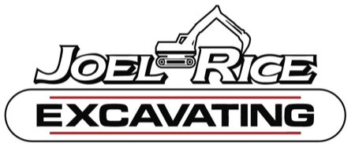

JOEL RICE EXCAVATING
CASHIERS, NC • (828) 743-5801
"The best in excavating and grading services on the plateau. The longest single owned and operating excavating company in the area. Offering fair and realistic pricing and job done right the first time."
Straight talk from over 35 years of shifting dirt, clearing steep ridges, and hammering granite bedrock across the Cashiers Plateau.
"We hope that you will consider using our company for your excavating and grading needs. We have a long history of jobs well done. We will give you a fair and honest price upfront, in an effort to avoid any surprises."
"We keep your best interests and budget in mind and may make recommendations to keep costs down, but we will not cut corners. We protect you, your future structure or home, and the environment."
"Good excavating will not show signs of erosion, will keep water away from your home or structure, and will not allow for run-off into nearby waterways."
"We can help you responsibly create a lasting and secure homesite, install sewage systems, driveways, roads, cut in views and pastures, and rough in hard-scapes and landscaping. We look forward to working with you and answering any questions."

Joel Rice Excavating and Grading Inc. is proud to be the longest single-owned and operating excavating contractor on the Cashiers-Highlands Plateau. Based at 327 Hunter Road in Cashiers, Joel Rice has personally shaped thousands of mountain building sites, golf community estates, and steep access roads through solid granite and mountain terrain for over 35 years.
Every site cut, driveway grade, and foundation pad is engineered specifically for steep plateau topography and torrential mountain storms.
Custom building pads, steep ridge cuts, and engineered foundation preparation designed to prevent erosion on high-elevation plateau properties.
Heavy excavator-mounted rock breakers penetrating solid Blue Ridge granite for foundations, basements, and deep utility lines.
Access road carving, steep driveway grading, heavy aggregate compaction, and engineered culverts built to withstand torrential mountain storms.
Certified shallow-placement septic tank and drain field excavation, advanced engineered mound systems, and perk failure remediation.
Rock-lined drainage swales, culvert piping, and watershed runoff protection keeping mountain water away from foundations and out of waterways.
Selective timber clearing to open mountain view corridors, pasture development, and final grading ready for luxury hardscaping.
Authentic project photography of estate pads, granite rock hammering, switchback driveways, and erosion defense across Cashiers and Highlands.
 📍 Chinquapin & Cashiers Plateau, NC
📍 Chinquapin & Cashiers Plateau, NC
Precision multi-tier estate building pad cut into steep mountain slope with zero erosion and engineered rock benching.
 📍 Highlands Ridge & Whiteside Mtn, NC
📍 Highlands Ridge & Whiteside Mtn, NC
Hydraulic rock breaker shattering solid granite bedrock for deep utility trenching and custom estate basement footings.
 📍 Lake Toxaway & Sapphire Valley, NC
📍 Lake Toxaway & Sapphire Valley, NC
Heavy timber clearing and precision switchback driveway grading engineered to prevent washouts during heavy mountain rains.
 📍 Glenville & Cashiers, NC
📍 Glenville & Cashiers, NC
Heavy-duty culvert installations and rock-lined runoff diversion channels protecting building sites from elevation runoff.
 📍 Mountaintop Golf Club / Highlands, NC
📍 Mountaintop Golf Club / Highlands, NC
Multi-tier structural cut leveling steep terrain for boulder retaining walls and luxury mountain outdoor living terraces.
 📍 High Hampton & Sapphire, NC
📍 High Hampton & Sapphire, NC
Fine contour grading, view corridor tree clearing, and pasture rough-in preparing estates for custom hardscaping.
Customized specifically for the elevation, terrain, and soil conditions of local Jackson and Macon county mountain properties.
From Highway 107 South and Whiteside Cove to high-altitude estates in Chinquapin, we carve engineered foundation benches directly into mountain granite with heavy rock hammers and zero slope erosion.
Serving Highlands country club communities with precision grading, tight switchback driveway cuts, and deep foundation trenching that meets the highest architectural standards.
Managing steep mountain runoff and river basin soil conditions with rock-lined culverts, drainage swales, and certified septic tank excavation.
Specialized steep slope excavation, lake access road development, and multi-tier retaining terrace preparation along Lake Glenville's rugged shoreline.
Preserving historic plateau soils while clearing mountain view corridors, building pastures, and roughing in luxury hardscape terraces.
Executing golf community site cuts with zero runoff into protected trout streams, strict sediment control, and pristine finish grading.
Read reviews from local architects, luxury custom home builders, and plateau property owners.
"Joel Rice carved our foundation into the side of a granite ridge in Chinquapin. Flawless pad, zero erosion during torrential rains. The longest-running operator on the Plateau for a reason."
"The only excavation outfit we trust for high-value properties in Highlands. Professional crew, honest upfront pricing, and top-tier heavy iron that handles solid bedrock without flinching."
"Joel gave us an honest upfront estimate when another contractor tried to tack on 40% in rock fees mid-job. Finished our private road cut and septic prep ahead of schedule."
"35 years on the Plateau shows. Joel understands mountain hydrology and slope physics better than anyone in Jackson or Macon county. Not a single puddle near our foundation."
Clear answers from Joel Rice about high-elevation grading, granite rock hammering, and fair pricing.
The Plateau averages 3,500 to 4,500 feet in elevation and receives up to 80-100 inches of rainfall annually—among the highest rainfall totals in the continental US. Excavating here requires specialized understanding of mountain hydrology, steep slope stabilization, and Blue Ridge granite mechanics. Good excavation channels water safely away from foundations without causing erosion or runoff into local waterways.
We operate heavy commercial excavators fitted with high-frequency hydraulic rock breakers. Rather than expensive and disruptive blasting, we mechanically fracture and extract granite bedrock to exact footing depths, keeping your pad level and structurally sound.
As the longest single-owned and operating excavation contractor on the Plateau (over 35 years), Joel Rice visits every jobsite personally. We provide honest upfront estimates, assess rock risks in advance, and recommend money-saving adjustments to your site plan while refusing to cut corners on structural integrity.
Yes. We excavate certified residential and commercial septic systems, shallow-placement drain fields, and advanced engineered mound systems across Jackson and Macon counties, working directly with county health inspectors.
Call Joel Rice directly at (828) 743-5801 or visit our shop at 327 Hunter Road in Cashiers. We provide prompt on-site consultations across Cashiers, Highlands, Sapphire, Glenville, and Lake Toxaway.
Whether you're breaking ground on an estate home site in Chinquapin, cutting a steep switchback driveway, or need solid granite rock hammered, Joel Rice is ready to inspect your site personally.
No sales reps or automated queues. Speak with the owner who has shifted dirt on the Plateau for over 35 years.
📞 Call (828) 743-5801 📍 View 327 Hunter Road on Google Maps →